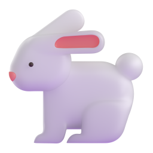

Choose your child’s Year 1 term, then help them sound out the word and blend the sounds together. They tap the matching picture.
A fresh mix every round, with no timer.
A wrong guess costs one heart. They can try a different picture.
Look at the picture and tap word parts in order. Two extra pieces appear in Autumn; three appear in Spring and Summer. Tap a placed part to put it back, or use the amber Reset word button. A completed word checks automatically: correct words chime and advance; incorrect words pop and clear the pieces. Each new incorrect word costs a heart. Linked pieces such as a…e place two letters around the next piece. Both games share the same words. Ten completed words earn a surprise animal celebration.
Tick the checkbox on either phonics game’s term screen to add nine picture words and give these sounds six of the ten questions, mixed with four other words. Untick it for the regular word mix. Ask your child to say the word and its sounds before choosing. Ear practice uses hear (tear means a drop from an eye); er includes fern and, in later terms, endings such as ladder. Follow the pronunciation model used at school. The games do not assess speech.
Tap the missing number. The roses show how two parts make ten. Switch Show roses off to practise recall; turn it on whenever help is needed. Every round has ten challenges covering all six number pairs through adding and taking away. Mistakes allow another try at the same question and never cost a heart. Finish all ten to meet a surprise animal, including four garden friends and four rare unicorns found only here. The first win introduces a garden friend; later mistake-free wins have a one-in-five chance of a unicorn surprise. Alice visitors also require a mistake-free round in either phonics game. Correct answers move on automatically after a brief celebration, just like the phonics games. There is no time limit for answering.
Autumn revisits familiar sounds and introduces patterns such as ou. Spring adds alternative spellings and split digraphs, as in cake. Summer practises more spellings and words with more than one syllable, plurals and actions.
These are broad practice groups based on phonics progression used in England, not a school-specific teaching scheme. Term timings and year names vary across the UK. Choose an earlier set whenever that suits your child.
No accounts, adverts or tracking. Sound is optional. Phonics round progress stays in this tab. Only the last completed maths round’s mode and independent-answer count are saved on this device. Clear them using the button above.
Please enable JavaScript to play the games.